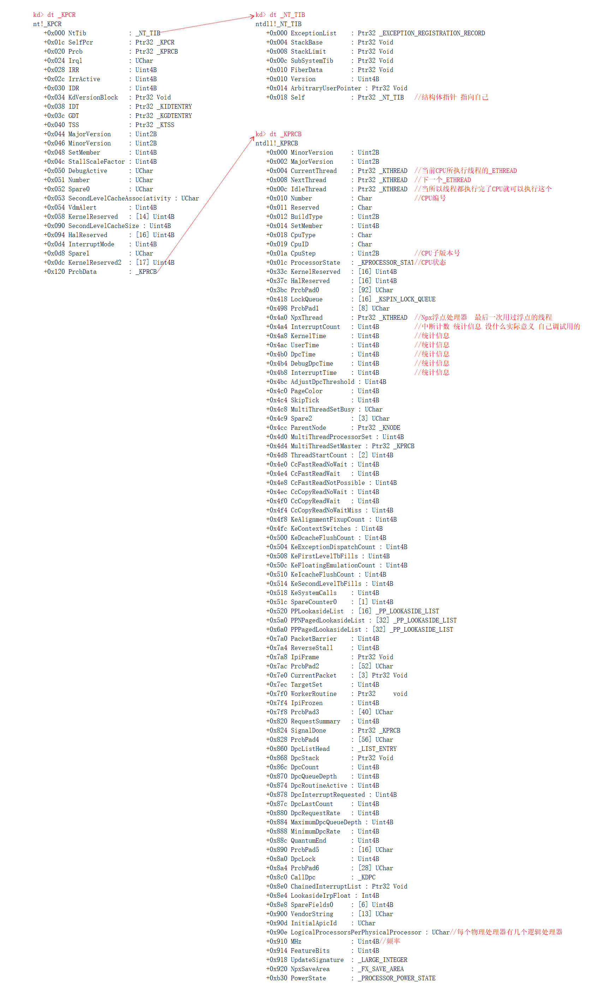

# 内容回顾
进程在内核中对应结构体： EPROCESS
线程在内核中对应结构体： ETHREAD
CPU 在内核中也有一个对应的结构体，每一个 CPU 有一个，叫 KPCR
# KPCR 介绍
当线程进入 0 环时，FS:[0] 指向 KPCR (3 环时 FS:[0] -> TEB)
每个 CPU 都有一个 KPCR 结构体 (一个核一个)
KPCR 中存储了 CPU 本身要用的一些重要数据：GDT、IDT 以及线程相关的一些信息。
# _KPCR, _NT_TIB, _KPRCB
KPCR 叫 CPU 控制区（Processor Control Region）

# _NT_TIB 是 _KPCR 的前 0x1c 字节
ntdll!_NT_TIB | |
+0x000 ExceptionList : Ptr32 _EXCEPTION_REGISTRATION_RECORD | |
异常链表，执行到 _try _catch 时，会在这个链表里添加异常处理函数 | |
+0x004 StackBase : Ptr32 Void | |
+0x008 StackLimit : Ptr32 Void | |
0 环当前线程的栈基址和栈大小 | |
+0x00c SubSystemTib : Ptr32 Void | |
+0x010 FiberData : Ptr32 Void | |
+0x010 Version : Uint4B | |
+0x014 ArbitraryUserPointer : Ptr32 Void | |
+0x018 Self : Ptr32 _NT_TIB | |
指向自己的指针 |
# _KPCR
nt!_KPCR | |
+0x000 NtTib : _NT_TIB | |
+0x01c SelfPcr : Ptr32 _KPCR | |
指向自己的指针 | |
+0x020 Prcb : Ptr32 _KPRCB | |
指向 _KPRCB，即 _KPCR + 0x120 偏移处的结构 | |
+0x024 Irql : UChar | |
+0x028 IRR : Uint4B | |
+0x02c IrrActive : Uint4B | |
+0x030 IDR : Uint4B | |
+0x034 KdVersionBlock : Ptr32 Void | |
+0x038 IDT : Ptr32 _KIDTENTRY | |
+0x03c GDT : Ptr32 _KGDTENTRY | |
IDT, GDT 表基址 | |
+0x040 TSS : Ptr32 _KTSS | |
指向 TSS 表，里面存储了 0 环栈顶 ESP0 和 0 环堆栈段 SS0，中断门提权要用 | |
+0x044 MajorVersion : Uint2B | |
+0x046 MinorVersion : Uint2B | |
+0x048 SetMember : Uint4B | |
+0x04c StallScaleFactor : Uint4B | |
+0x050 DebugActive : UChar | |
+0x051 Number : UChar | |
CPU 编号 | |
+0x052 Spare0 : UChar | |
+0x053 SecondLevelCacheAssociativity : UChar | |
+0x054 VdmAlert : Uint4B | |
+0x058 KernelReserved : [14] Uint4B | |
+0x090 SecondLevelCacheSize : Uint4B | |
+0x094 HalReserved : [16] Uint4B | |
+0x0d4 InterruptMode : Uint4B | |
+0x0d8 Spare1 : UChar | |
+0x0dc KernelReserved2 : [17] Uint4B | |
+0x120 PrcbData : _KPRCB | |
扩展结构体 |
# _KPRCB
ntdll!_KPRCB | |
+0x000 MinorVersion : Uint2B | |
+0x002 MajorVersion : Uint2B | |
+0x004 CurrentThread : Ptr32 _KTHREAD | |
当前线程 | |
+0x008 NextThread : Ptr32 _KTHREAD | |
即将切换的下一个线程 | |
+0x00c IdleThread : Ptr32 _KTHREAD | |
空闲线程 // 所有线程都执行完了，CPU 就致执行这个 | |
+0x010 Number : Char | |
CPU 编号 | |
+0x011 Reserved : Char | |
+0x012 BuildType : Uint2B | |
+0x014 SetMember : Uint4B | |
+0x018 CpuType : Char | |
+0x019 CpuID : Char | |
+0x01a CpuStep : Uint2B | |
+0x01c ProcessorState : _KPROCESSOR_STATE | |
+0x33c KernelReserved : [16] Uint4B | |
+0x37c HalReserved : [16] Uint4B | |
+0x3bc PrcbPad0 : [92] UChar | |
+0x418 LockQueue : [16] _KSPIN_LOCK_QUEUE | |
+0x498 PrcbPad1 : [8] UChar | |
+0x4a0 NpxThread : Ptr32 _KTHREAD | |
+0x4a4 InterruptCount : Uint4B | |
+0x4a8 KernelTime : Uint4B | |
+0x4ac UserTime : Uint4B | |
+0x4b0 DpcTime : Uint4B | |
+0x4b4 DebugDpcTime : Uint4B | |
+0x4b8 InterruptTime : Uint4B | |
+0x4bc AdjustDpcThreshold : Uint4B | |
+0x4c0 PageColor : Uint4B | |
+0x4c4 SkipTick : Uint4B | |
+0x4c8 MultiThreadSetBusy : UChar | |
+0x4c9 Spare2 : [3] UChar | |
+0x4cc ParentNode : Ptr32 _KNODE | |
+0x4d0 MultiThreadProcessorSet : Uint4B | |
+0x4d4 MultiThreadSetMaster : Ptr32 _KPRCB | |
+0x4d8 ThreadStartCount : [2] Uint4B | |
+0x4e0 CcFastReadNoWait : Uint4B | |
+0x4e4 CcFastReadWait : Uint4B | |
+0x4e8 CcFastReadNotPossible : Uint4B | |
+0x4ec CcCopyReadNoWait : Uint4B | |
+0x4f0 CcCopyReadWait : Uint4B | |
+0x4f4 CcCopyReadNoWaitMiss : Uint4B | |
+0x4f8 KeAlignmentFixupCount : Uint4B | |
+0x4fc KeContextSwitches : Uint4B | |
+0x500 KeDcacheFlushCount : Uint4B | |
+0x504 KeExceptionDispatchCount : Uint4B | |
+0x508 KeFirstLevelTbFills : Uint4B | |
+0x50c KeFloatingEmulationCount : Uint4B | |
+0x510 KeIcacheFlushCount : Uint4B | |
+0x514 KeSecondLevelTbFills : Uint4B | |
+0x518 KeSystemCalls : Uint4B | |
+0x51c SpareCounter0 : [1] Uint4B | |
+0x520 PPLookasideList : [16] _PP_LOOKASIDE_LIST | |
+0x5a0 PPNPagedLookasideList : [32] _PP_LOOKASIDE_LIST | |
+0x6a0 PPPagedLookasideList : [32] _PP_LOOKASIDE_LIST | |
+0x7a0 PacketBarrier : Uint4B | |
+0x7a4 ReverseStall : Uint4B | |
+0x7a8 IpiFrame : Ptr32 Void | |
+0x7ac PrcbPad2 : [52] UChar | |
+0x7e0 CurrentPacket : [3] Ptr32 Void | |
+0x7ec TargetSet : Uint4B | |
+0x7f0 WorkerRoutine : Ptr32 void | |
+0x7f4 IpiFrozen : Uint4B | |
+0x7f8 PrcbPad3 : [40] UChar | |
+0x820 RequestSummary : Uint4B | |
+0x824 SignalDone : Ptr32 _KPRCB | |
+0x828 PrcbPad4 : [56] UChar | |
+0x860 DpcListHead : _LIST_ENTRY | |
+0x868 DpcStack : Ptr32 Void | |
+0x86c DpcCount : Uint4B | |
+0x870 DpcQueueDepth : Uint4B | |
+0x874 DpcRoutineActive : Uint4B | |
+0x878 DpcInterruptRequested : Uint4B | |
+0x87c DpcLastCount : Uint4B | |
+0x880 DpcRequestRate : Uint4B | |
+0x884 MaximumDpcQueueDepth : Uint4B | |
+0x888 MinimumDpcRate : Uint4B | |
+0x88c QuantumEnd : Uint4B | |
+0x890 PrcbPad5 : [16] UChar | |
+0x8a0 DpcLock : Uint4B | |
+0x8a4 PrcbPad6 : [28] UChar | |
+0x8c0 CallDpc : _KDPC | |
+0x8e0 ChainedInterruptList : Ptr32 Void | |
+0x8e4 LookasideIrpFloat : Int4B | |
+0x8e8 SpareFields0 : [6] Uint4B | |
+0x900 VendorString : [13] UChar | |
+0x90d InitialApicId : UChar | |
+0x90e LogicalProcessorsPerPhysicalProcessor : UChar | |
+0x910 MHz : Uint4B | |
+0x914 FeatureBits : Uint4B | |
+0x918 UpdateSignature : _LARGE_INTEGER | |
+0x920 NpxSaveArea : _FX_SAVE_AREA | |
+0xb30 PowerState : _PROCESSOR_POWER_STATE |
# Reference
https://blog.csdn.net/Kwansy/article/details/109545429